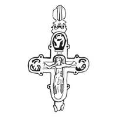

Catalog › CE-0976 · KOR2003-III.1.1.2
Encolpion cu inel bi-conic, Răstignire și medalioane cu sfinți în niello, Odighitria pe revers
sec. XII (1101–1200) · Vasiliv (Vasilev litopisețean), regiunea Cernăuți (raionul Zastavna), Ucraina · Muzeul Regional Cernăuți (ChKM), Cernăuți, inv. № 12232, П 705
double-sided reliquary cross (enkolpion), aramă; c. XII (1101–1200); found at Vasiliv (Vasilev litopisețean), regiunea Cernăuți (raionul Zastavna), Ucraina; kept at Muzeul Regional Cernăuți (ChKM), Cernăuți.


Identificare
- Categorie
- Encolpion bivalv (relicvar)
- Material
- Aramă
- Tehnică
- Turnare în relief; Gravare (incizie); Niello
- Dimensiuni
- Î 100 × L 70 mm
Iconografie
- Avers
- Neidentificat
- Descriere avers
- Pe valva de față imaginea reliefată a lui Hristos răstignit și imagini neclare în niello ale sfinților în trei medalioane (prelucrarea detaliilor lipsește, probabil din cauza uzurii).
- Revers
- Maica Domnului cu Pruncul; Neidentificat
- Descriere revers
- Pe valva de revers, în centru, imaginea reliefată a Maicii Domnului Odighitria; în medalioanele de sus și din dreapta, imagini în niello până la piept ale sfinților.
Datare și atribuire
- Datare
- sec. XII (1101–1200)
- Centru
- Necunoscut
- Tipologie
- Korzukhina–Peskova 2003, tip III 1 1
Descoperire
- Localitate
- Vasiliv (Vasilev litopisețean)
- Regiune
- regiunea Cernăuți (raionul Zastavna)
- Țară
- Ucraina
- Context
- Necunoscut
Păstrare și referințe
- Colecție
- Muzeul Regional Cernăuți (ChKM), Cernăuți
- Nr. inventar
- № 12232, П 705
- Bibliografie
- G. F. Korzukhina, A. A. Peskova, Древнерусские энколпионы. Нагрудные кресты-реликварии XI–XIII вв., Sankt-Petersburg, 2003 [Korzukhina–Peskova 2003], p. 102, cat. nr. III 1 1/2, reprodusă la Табл. 58 (planșe, p. 300). Bibliografie citată în sursă: Тимощук 1981, 134, рис. 11, 13 (numai valva de față); Есин 1997, 18; Пивоваров 2001, 69, рис. 9, 6.
- Figura
- Табл. 58
- Planșe
- Korzukhina–Peskova 2003, Табл. 58 (planșă fără paginație proprie în PDF; p. 300 tipărită)
- Observații
- Datare după Peskova: sec. XII. Circumstanțe: Săpături B. A. Timoșciuk în arealul Zamcișce. Dimensiuni: h 10,0 cm cu balamalele și inelul de agățare. Encolpion cu inel de agățare bi-conic; medalionul din stânga al valvei de revers și balamalele de jos ale ei sunt pierdute. Inscripțiile, probabil, nu s-au păstrat. Planșa reproduce desenul după Timoșciuk 1981. Coordonate: nu sunt date în sursă.
Citare: Corpus Encolpiorum, CE-0976, Encolpion cu inel bi-conic, Răstignire și medalioane cu sfinți în niello, Odighitria pe revers, --root/piese/KOR2003-III.1.1.2/ (accesat 2026-10-20).